Free · Offline · Windows + macOS
Tasks, clips, and time — one private workspace.
Kanban boards, a clipboard vault with a global quick-paste, time tracking with timesheets, project docs and a journal — all on your machine. No account. No cloud. No subscription.
Also on macOS — brew install --cask nkunal1992/tap/trakisilo or download the DMG. First launch needs one approval in System Settings (unsigned build).
Why
One app, not three
The usual setup is a kanban tool plus a clipboard manager plus a time tracker — three apps, three accounts, three clouds. Trakisilo puts them in one context, so the clip pastes into the task and the timer runs on it.
Trello + Ditto + Toggl Track
Based on publicly listed plans and defaults, October 2026.
The workspace
See it in action
Short live loops of the real app — every feature has its own deep-dive.
Who it's for
Built for people who ship
Snippets and commands one hotkey away; specs and decisions live next to the tickets they describe.
Track hours on the same tasks you bill for, then export the weekly timesheet to CSV.
A typed journal of decisions and sources; checklist processes for recurring work.
Board docs keep client decisions beside the board; processes make delivery repeatable.
Private by design
Your work never leaves your machine
Offline-first isn't a mode — it's the architecture. No account to create, no telemetry to opt out of, nothing captured in the background.
Full walkthrough
Three minutes, end to end
Every surface
Screenshots
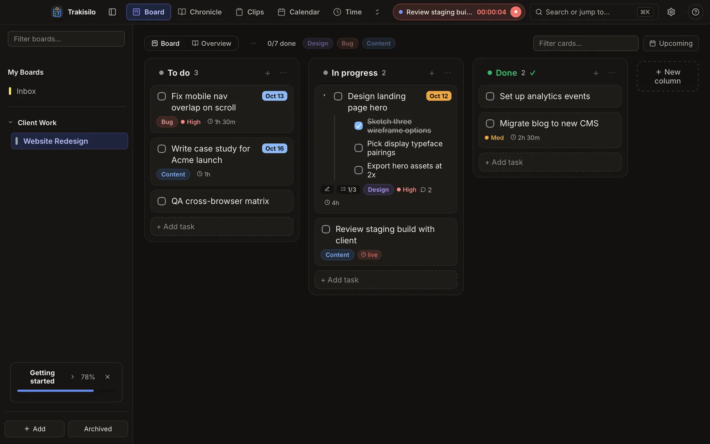
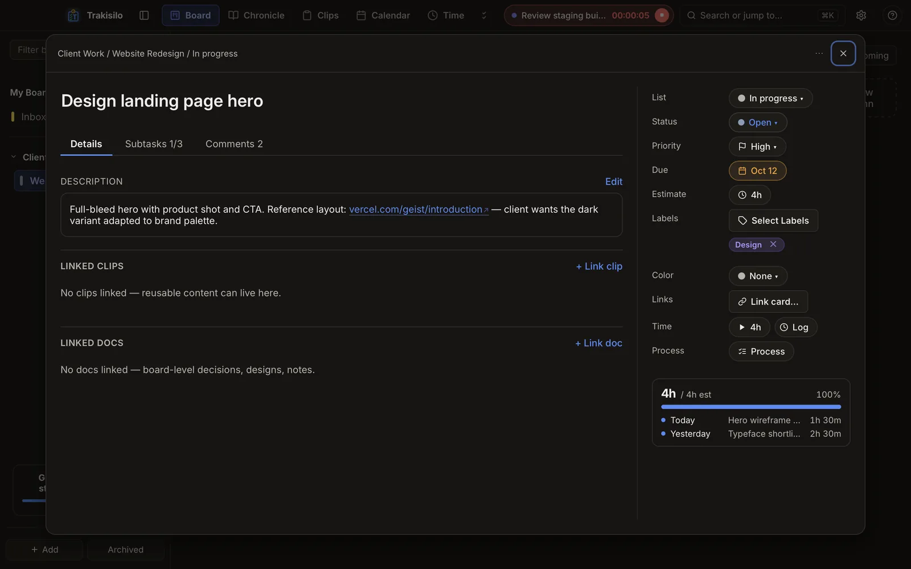
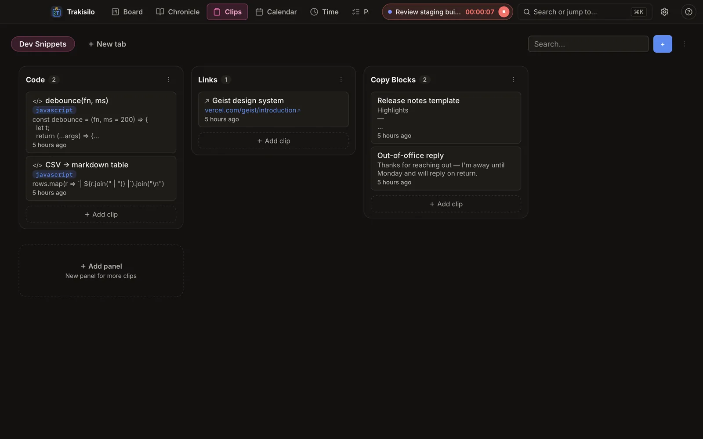
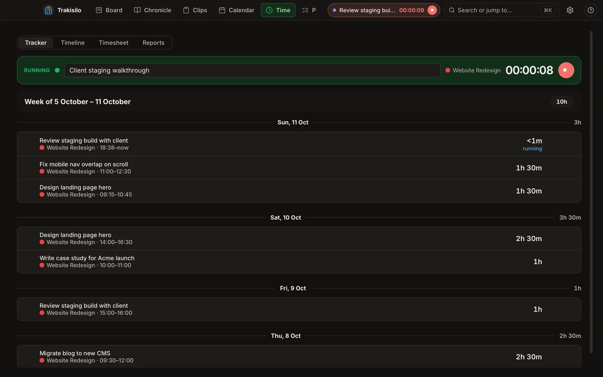
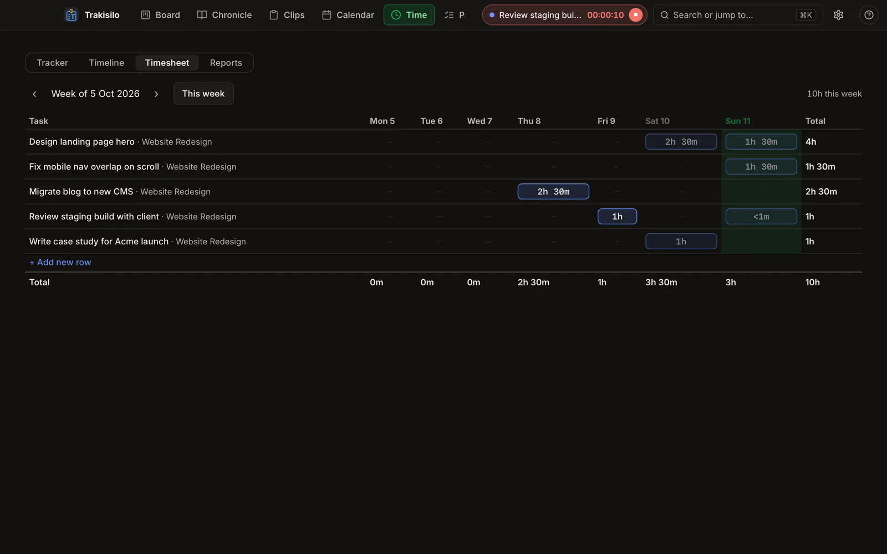
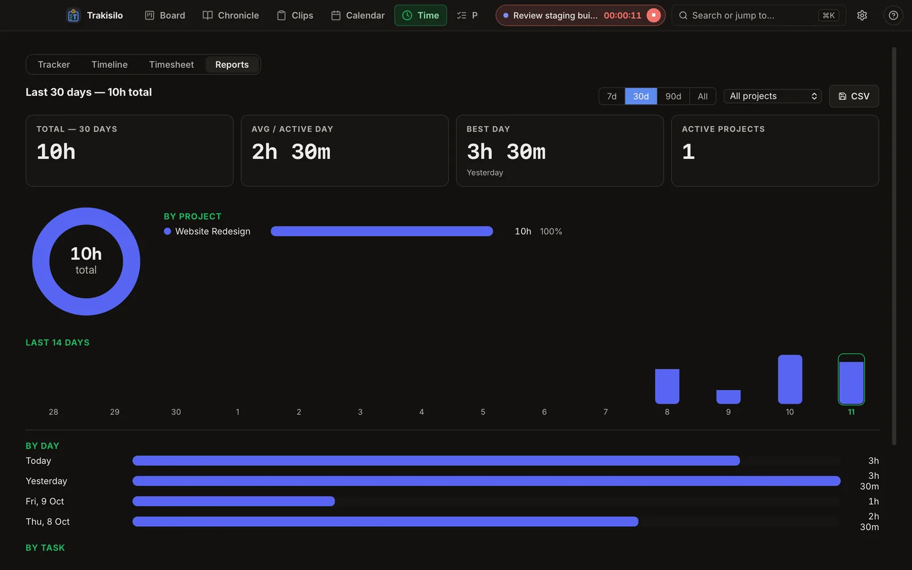
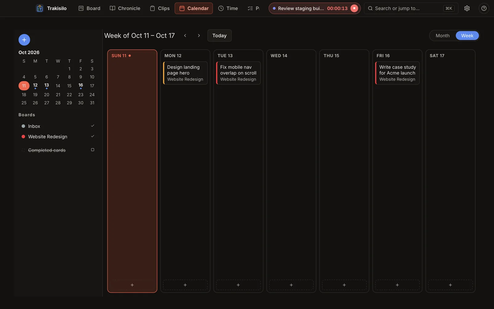
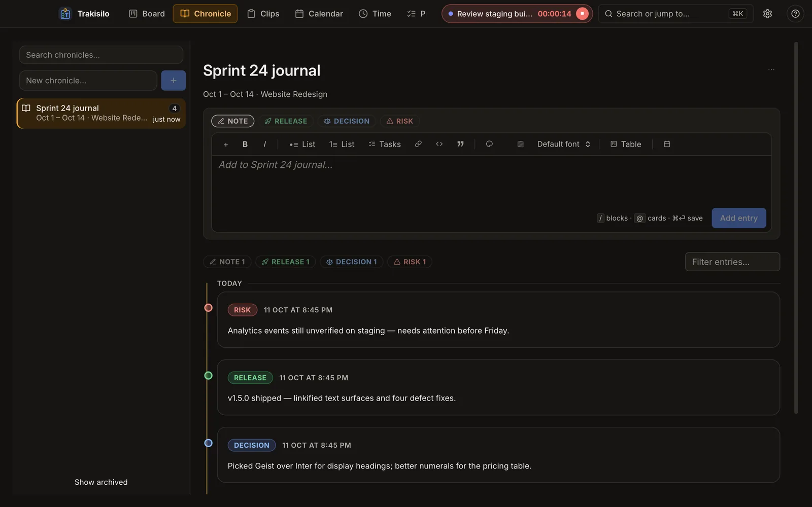
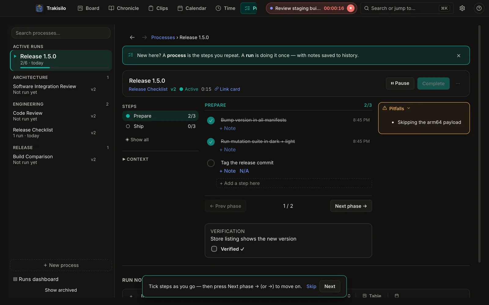
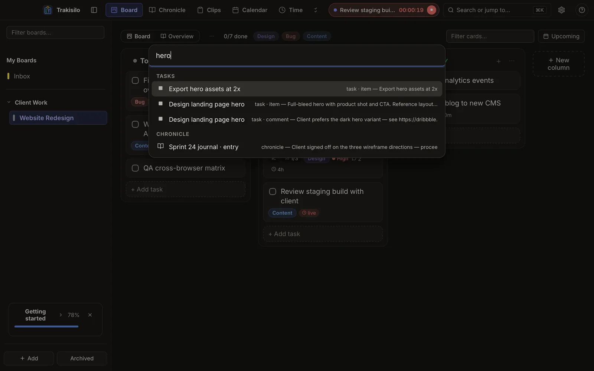
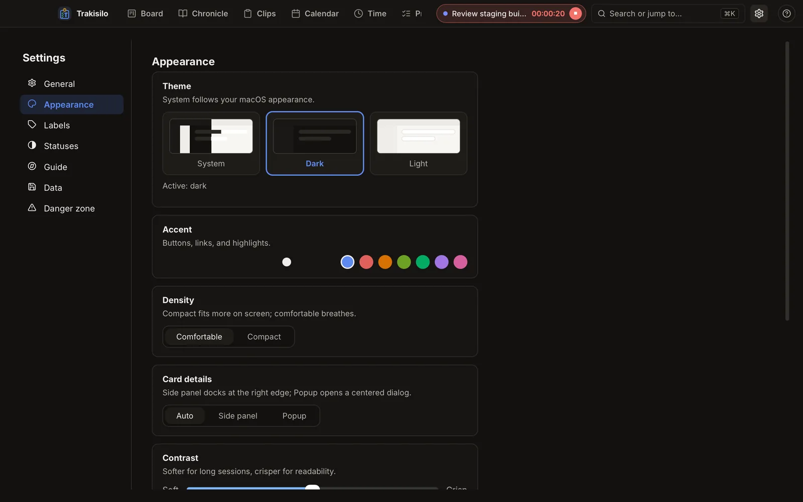
Questions
FAQ
Is Trakisilo really free?
Yes. All features, no subscription, no account, no trial period.
Does it need an internet connection?
No. Trakisilo is fully offline — every feature works without a connection, and the app makes no network calls.
Where is my data stored?
In a local database on your machine. Nothing leaves your device unless you export or back it up yourself.
How do I back up or move to a new PC?
Settings → Backup saves your whole workspace to a folder you choose. On the new machine, Settings → Restore picks it up in one step.
Does the clipboard manager record everything I copy?
No — nothing is captured in the background. A clip exists only when you explicitly save one.
Is there sync or a mobile app?
No. Offline is a deliberate design choice, not a missing feature — your data never lives on someone else's server.
Which Windows versions does it run on?
Windows 10 (1809+) and Windows 11, x64 and ARM64, installed from the Microsoft Store.
Is there a macOS version?
Yes — install with brew install --cask nkunal1992/tap/trakisilo or download the DMG (universal — Apple Silicon + Intel). The build is unsigned, so on first launch macOS asks you to approve it once: open it, then System Settings → Privacy & Security → Open Anyway.
How do I report a bug or request a feature?
Use the in-app ? help panel, or open an issue — feedback lands directly with the developer.
Your work, on your machine.
Free forever · installs in seconds · nothing to sign up for